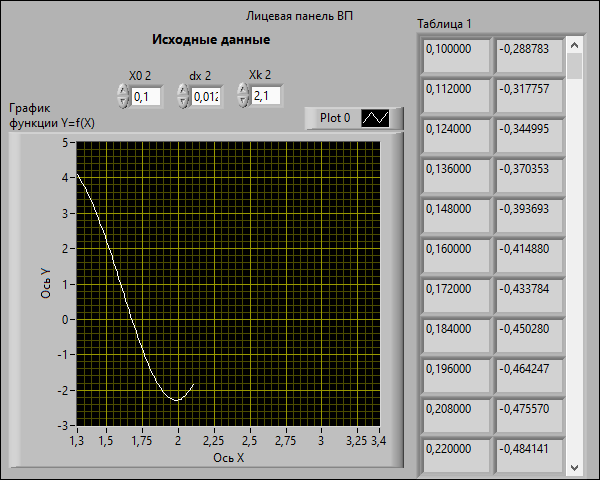
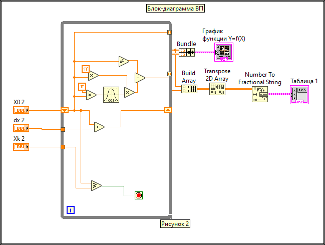

На рисунке 1 представлена лицевая панель ВП, который реализует вычисление значения функции (вариант №14) в зависимости от изменения значения аргумента X в диапазоне от X0=0.1 до Xk=2,1 и построение графика этой функции. На рисунке 2 представлена блок-диаграмма данного ВП.
В таблице 1 на лицевой панели представлены вычисленные значения функции для каждого значения аргумента в заданном диапазоне.
